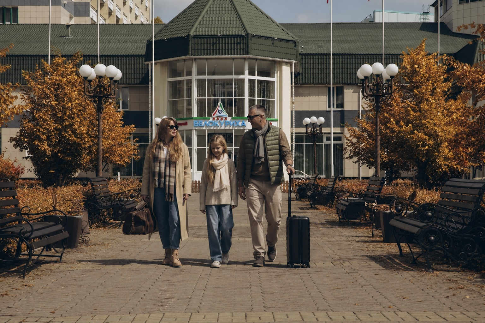

Баннер «Бархатный сезон»

1 сентября — 25 октябряБархатныйсезонв БелокурихеЗолотая осень Алтая — время для прогулок, SPA и восстановления без летней суеты.ПрогулкиБассейныSPAСобытияОткрыть сезон

1 сентября — 25 октябряБархатный